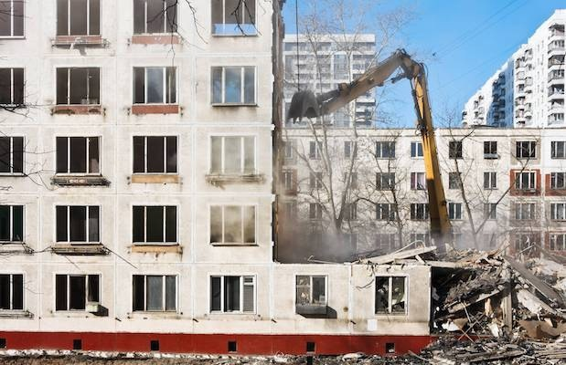

Очень прошу жильцов ознакомиться с памяткой "Проблемы закона от 29.06.2022 №444-59 о Комплексном развитии территорий" и связаться со мной любым способом (контакты ниже), чтобы согласовать удобные для вас время проведения собраний и способ оповещения.
Если Вы снимаете квартиру у собственника -- убедительная просьба: сфотографируйте и перешлите информацию Вашему арендодателю.
В двух словах о проблеме: ЗАКОН ДЕЙСТВУЕТ. ИНФОРМАЦИЯ О ПРИОСТАНОВКЕ - ЛОЖНА.
Закон позволяет включить в "программу развития" любой дом, построенный в 1957-1970гг, что подразумевает принудительное переселение жильцов в пределах города, т.е. в том числе за КАД, вдали от метро, школ и больниц, в квартиру с меньшим числом комнат и площадью.
Поправки общественных организаций и депутатов, защищающих интересы граждан, отклоняются. Предложение определить понятие "равнозначное жилье" даже не заносится в протоколы собраний.
Если появляется инвестор, заинтересованный в "развитии" микрорайона, дома на его территории заносятся в проект. Единственный способ отказаться от переселения на условиях, предлагаемых нынешним законом, -- проголосовать за исключение дома из проекта на общем собрании собственников.
Поскольку сейчас принимаются поправки, усложняющие организацию собраний по инициативе жильцов
необходимо провести внеочередное общее собрание собственников
на котором будет выработан такой порядок организации следующих собраний, при котором жильцы смогут оперативно и легитимно собраться и выразить свою волю в документах, имеющих юридическую силу.
Что необходимо сделать на первом собрании по инициативе жильцов:
-
- Обсудить результаты предыдущего голосования собственников в июне 2022
- Протокол голосования можно изучить в личном кабинете ГИС ЖКХ (если есть учетная запись ГосУслуг) или получив распечатанную копию у меня
-
- Выбрать Совет дома и председателя
- Это обязанность собственников согласно ЖК РФ Статья 161.1. Совет многоквартирного дома
СД не заменяет Управляющую организацию (УК ЖКС №1 Фрунзенского района), не выполняет функции ТСЖ. Совет дома необходим, чтобы контролировать деятельность управляющей компании, своевременно предоставлять собственникам информацию о планирующихся изменениях в предоставляемых УК услугах и организовывать голосования собственников по важнейшим вопросам (заключение догоров со сторонними организациями, распоряжение и ремонт общего имущества, исключение из КРТ)
Подробнее о правах и обязанностях СД читайте в этой статье -
- Закрепить очно-заочную форму голосования с подачей голосов председателю и подсчетом Советом вместо системы ГИС ЖКХ
- Это поможет организовывать легитимные собрания по инициативе жильцов в кратчайшие сроки и даст контроль над результатами голосований
-
- Выбрать администратора ГИС ЖКХ из Совета дома для публикации и проверки организуемых собраний и протоколов
- Это позволит оперативно получать сведения о планирующихся изменениях и проверять соответствие протоколов воле жильцов
Организатор собрания -- Наталия Цвилих
+7(953) 178-62-19 n.tsvilikh@gmail.com Telegram What's Up
Домовой чат (сейчас только Телеграм)
https://t.me/bukharestskaya9